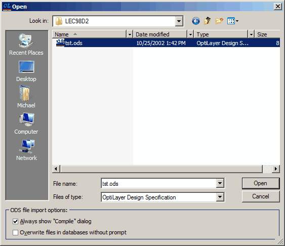
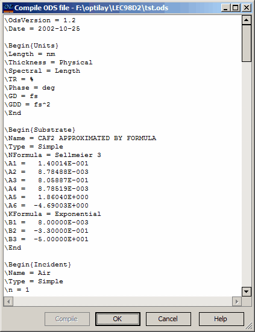

Reading and Writing ODS Files
Reading and Writing ODS Files
The OptiLayer Design Specification (ODS) file is an ASCII file that includes all essential information about the current design, such as layer thicknesses, material properties, substrate details, and target function. It serves as a human-readable format for accessing and editing design data, and can be opened and modified using any text editor. ODS files are also useful for sharing data among users.
To create an ODS file, initiate the “Save Project As…” command from the File Menu.
To load data that was previously saved in an ODS file, choose the “Open ODS File…” command from the File Menu. This allows you to access and utilize the saved design information efficiently.

The Open dialog offers two options to manage the import of ODS files. When the “Always show “Compile” dialog” option is selected, the dialog will be shown during the import process regardless of the import result. If this option is not selected, the dialog will only appear in the event of compilation errors. The second option, “Overwrite files in databases without prompt,” determines whether database files are overwritten without a prompt or if a prompt is presented before overwriting occurs. By enabling this option, files in the databases will be overwritten automatically without requesting confirmation.

The Compile ODS file window allows the user to view and modify the contents of the ODS file before proceeding. Upon clicking the OK button, if the “Overwrite files in databases without prompt” option is unchecked (as described earlier), the user will be asked to confirm the overwriting of any existing database files with the same names. If the user confirms the overwrite operation, the existing database files with matching names will be replaced. New database files will be added to the respective databases without any additional notification or prompt. This process ensures that the user has control over file overwrites and maintains data integrity during the ODS file import operation.
Note:

Stacks are currently not supported by the ODS file format. The ODS file format includes essential information about the design, but does not support the representation of stack structures. If stacks are a critical component of your design, alternative methods may need to be considered for managing and transferring stack data.